0: baseline — endpoint_clear
Opening/base m: [0.0, -1.0, 0.4]; tank yaw 0.00°; cap yaw 0.00°
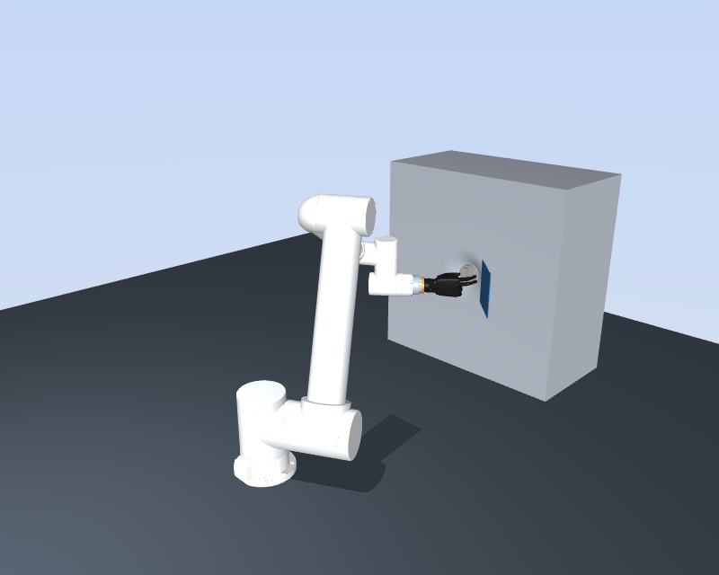
Pregrasp only. No path/contact execution. Failures retained; ik_not_found shows initial arm and target marker. Clear means only no penetration over diagnostic threshold in enabled geometry.
Opening/base m: [0.0, -1.0, 0.4]; tank yaw 0.00°; cap yaw 0.00°

Opening/base m: [0.12739233746429088, -0.9460426572472259, 0.4]; tank yaw 0.00°; cap yaw 0.00°
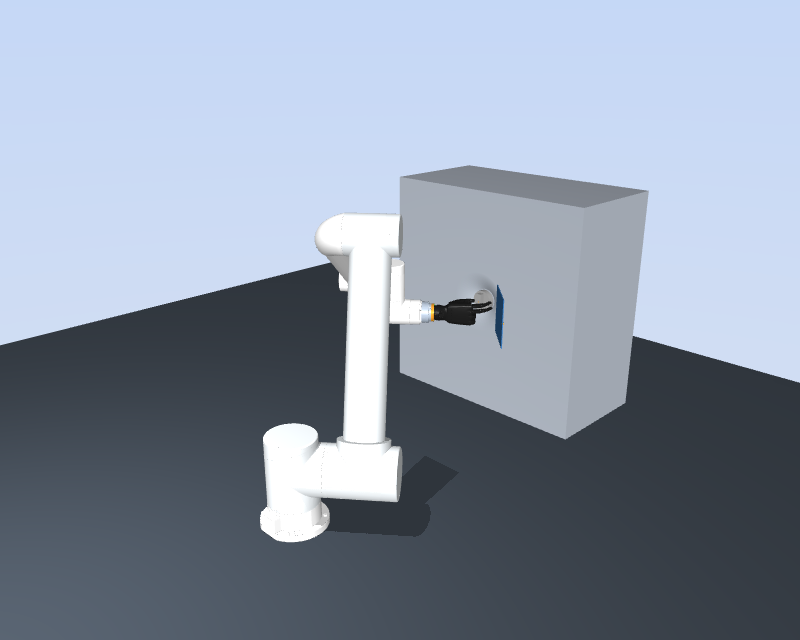
Opening/base m: [0.008194704787238938, -0.9966944728942941, 0.4]; tank yaw 0.00°; cap yaw 0.00°
Opening/base m: [0.1626540478400545, -0.8174488845444556, 0.4]; tank yaw 0.00°; cap yaw 0.00°
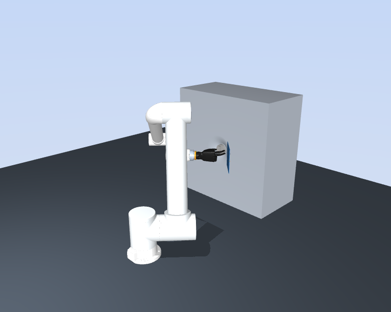
Opening/base m: [0.12132715515343598, -0.8541006878032004, 0.4]; tank yaw 0.00°; cap yaw 0.00°
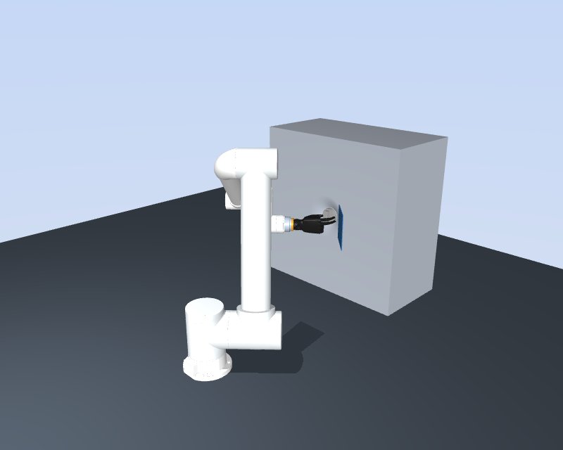
Opening/base m: [0.0, -1.0, 0.4]; tank yaw 2.62°; cap yaw 0.00°
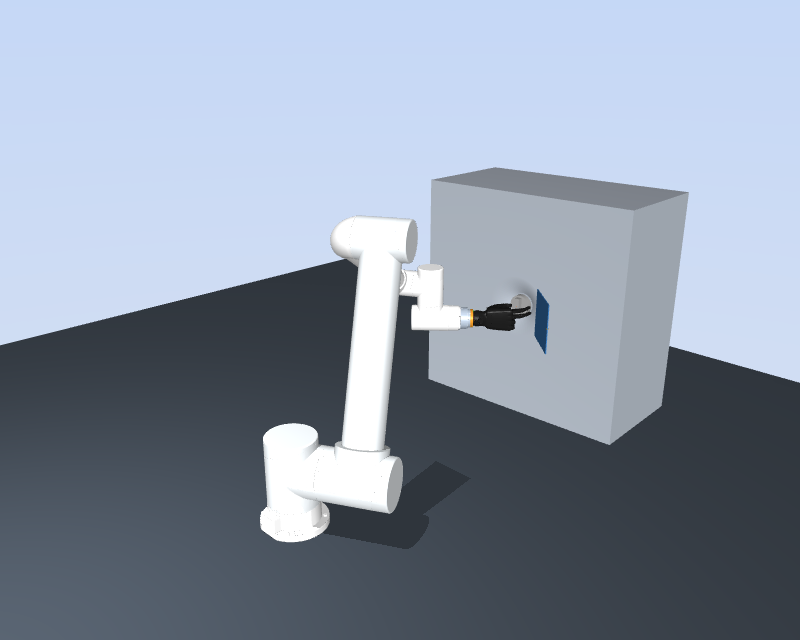
Opening/base m: [0.0, -1.0, 0.4]; tank yaw 26.10°; cap yaw 0.00°
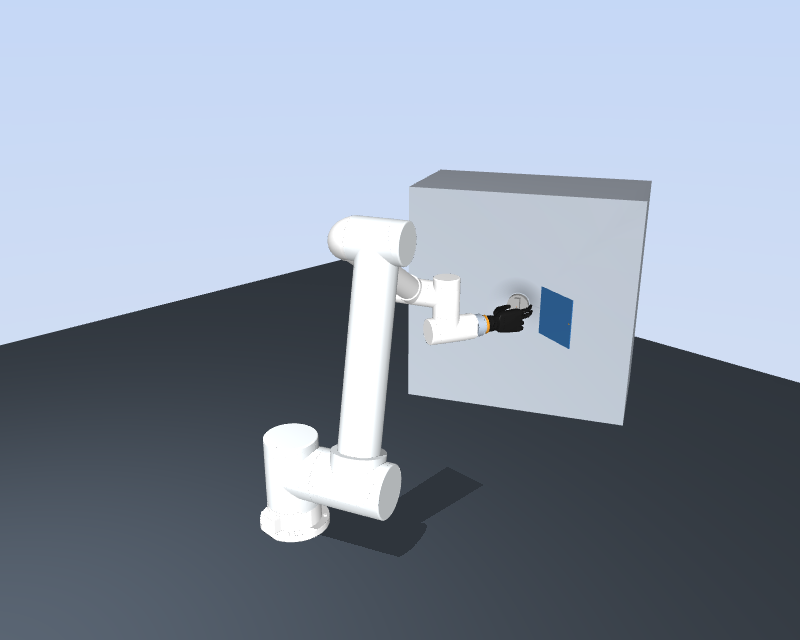
Opening/base m: [0.0, -1.0, 0.4]; tank yaw 18.95°; cap yaw 0.00°
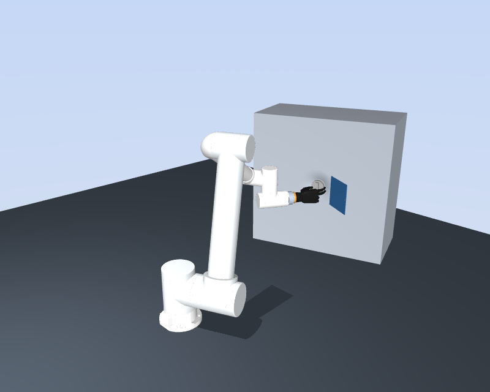
Opening/base m: [0.0, -1.0, 0.4]; tank yaw -29.84°; cap yaw 0.00°
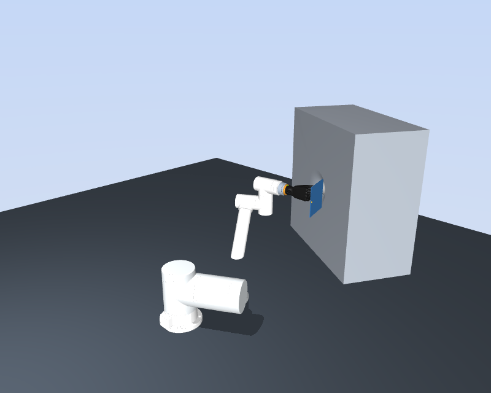
Opening/base m: [0.0, -1.0, 0.4]; tank yaw 0.00°; cap yaw 21.44°
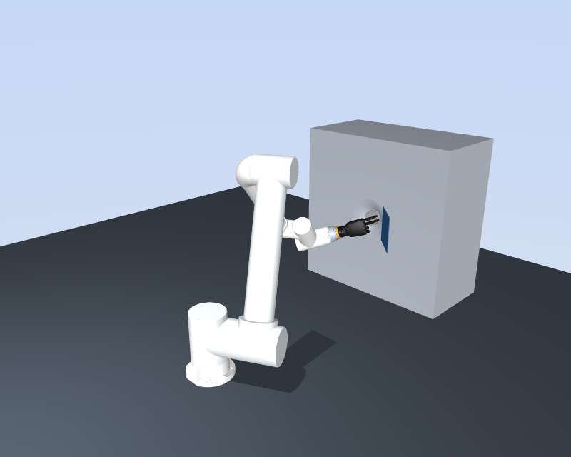
Opening/base m: [0.0, -1.0, 0.4]; tank yaw 0.00°; cap yaw -27.98°
Opening/base m: [0.0, -1.0, 0.4]; tank yaw 0.00°; cap yaw 13.78°
Opening/base m: [0.0, -1.0, 0.4]; tank yaw 0.00°; cap yaw -19.46°
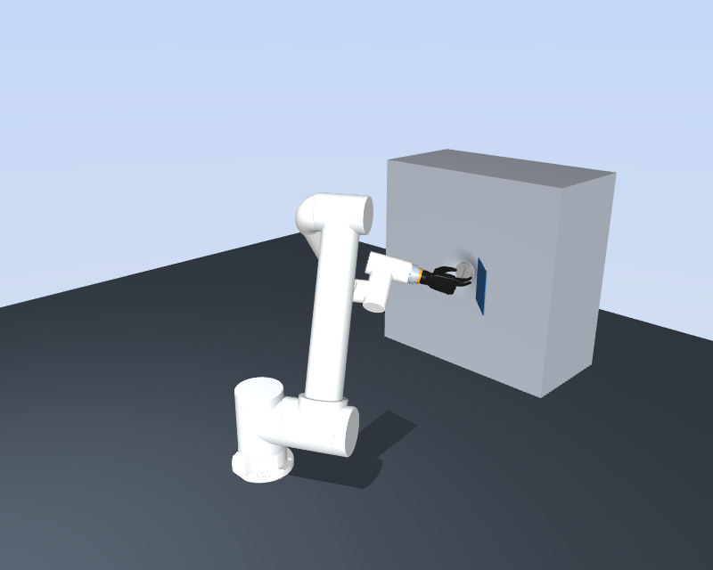
Opening/base m: [0.17263578446997732, -0.8917077559501817, 0.4]; tank yaw -12.02°; cap yaw -4.64°
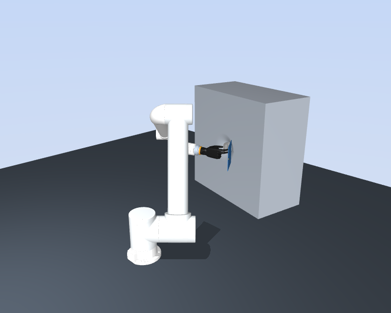
Opening/base m: [0.005663934229092594, -0.9751433447000872, 0.4]; tank yaw 10.24°; cap yaw 8.83°
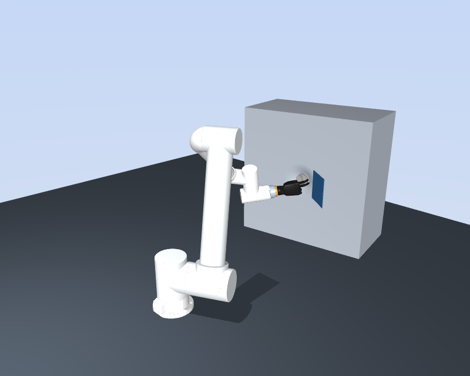
Opening/base m: [0.12307702229625078, -0.9232644891476234, 0.4]; tank yaw 29.83°; cap yaw 28.85°
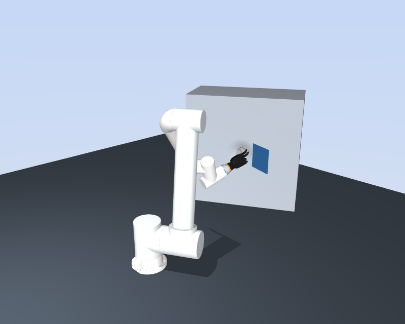
Opening/base m: [0.13710839689613893, -0.8699081447464367, 0.4]; tank yaw 11.31°; cap yaw -6.66°
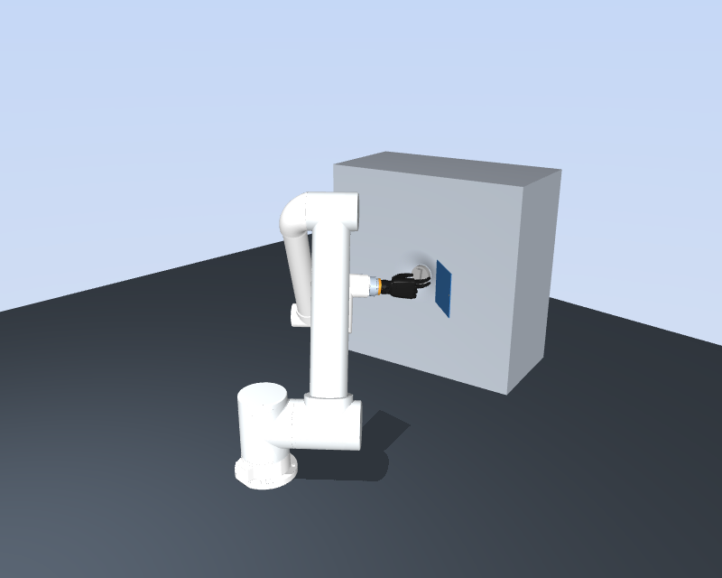